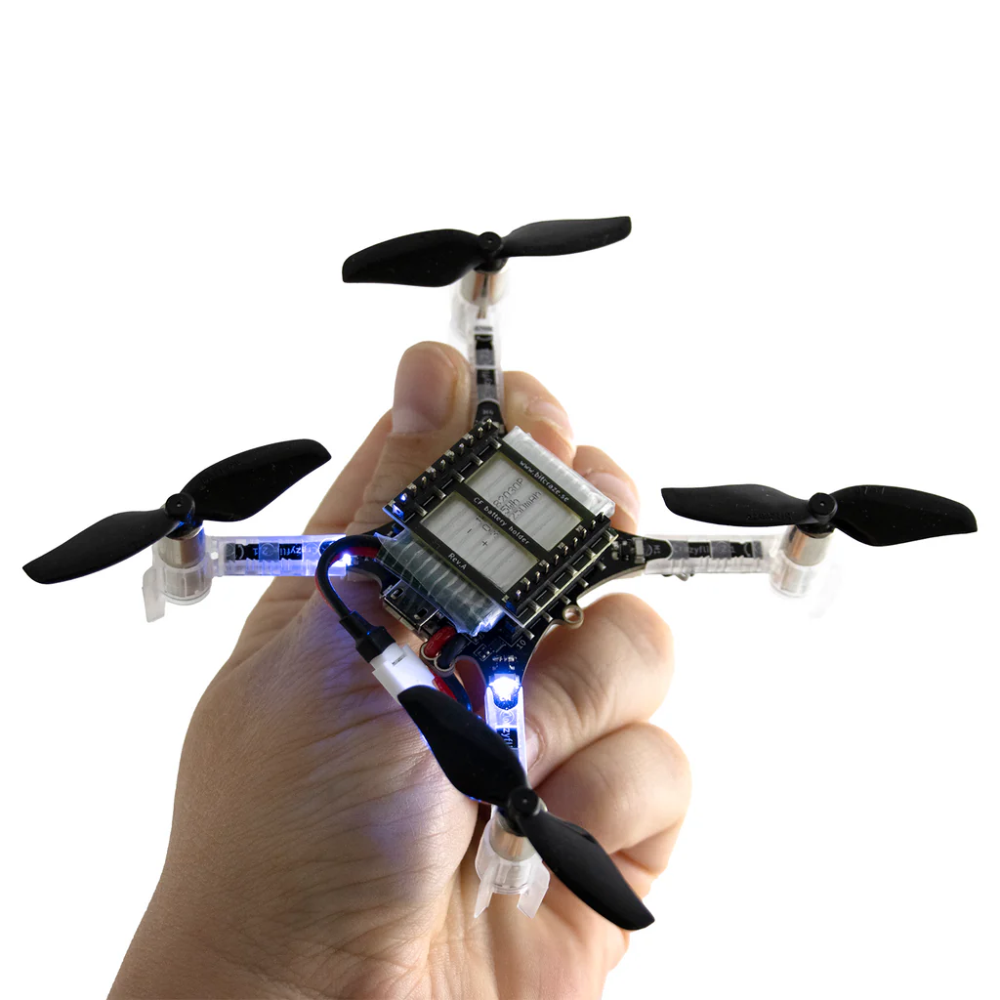
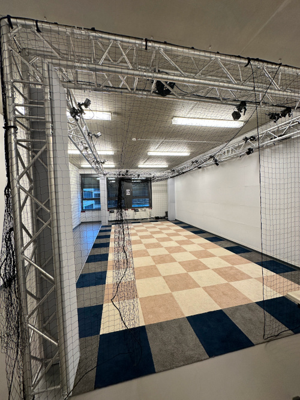

Intro
Oct 17, 2025
Bitcraze Crazyflie 2.1

MAR 4.014

9 ECTS (270h):
Lecture: \(5 \cdot 1.5 = 8h\)
Discussion \(15 \cdot 1.5 = 23h\)
230h programming, testing (i.e. 15h/week)
Lectures/Discussions on Friday (10am-2pm; with breaks; MAR 0.013)
Time slots for practical part throughout the week (MAR 4.014)
| 1.0 | 1.3 | 1.7 | 2.0 | 2.3 | 2.7 | 3.0 | 3.3 | 3.7 | 4.0 |
|---|---|---|---|---|---|---|---|---|---|
| 95 | 90 | 85 | 80 | 75 | 70 | 65 | 60 | 55 | 50 |
| Week | Topic | Notes |
|---|---|---|
| 1 (Oct 17) | Intro, Rust, Dynamics (1D + 2D) | |
| 2 | Dynamics 3D | Assignment 1 out |
| 3 | Discussion | Enrollment due |
| 4 | Discussion | |
| 5 | Grading Assignment 1 | Grade Assignment 1 |
| 6 | Geometric Controller (1D, 2D, 3D) | Assignment 2 out |
| 7 | Discussion | |
| 8 | Presentation of simulation results |
| Week | Topic | Notes |
|---|---|---|
| 9 | Flight tests | |
| 10 | Flight tests | Grade Assignment 2 |
| (holiday) | ||
| (holiday) | ||
| 11 (Jan 9 ) | EKF | Assignment 3 out |
| 12 | Discussion | |
| 13 | Flight tests | Grade Assignment 3 |
| 14 | Motion Planning | Assignment 4 out |
| 15 | Discussion | |
| 16 | Flight tests | Grade Assignment 4 |
We focus on compute-constrained systems and use Rust.
It’s a regular class, not a project, with emphasis on the practical part.
Due to the flight tests, the class is limited to 10 students.
?